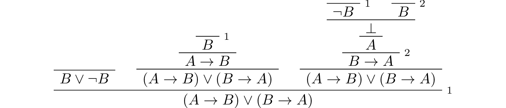

5. Classical Reasoning¶
If we take all the rules of propositional logic we have seen so far and exclude reductio ad absurdum, or proof by contradiction, we have what is known as intuitionistic logic. In intuitionistic logic, it is possible to view proofs in computational terms: a proof of \(A \wedge B\) is a proof of \(A\) paired with a proof of \(B\), a proof of \(A \to B\) is a procedure which transforms evidence for \(A\) into evidence for \(B\), and a proof of \(A \vee B\) is a proof of one or the other, tagged so that we know which is the case. The ex falso rule makes sense only because we expect that there is no proof of falsity; it is like the empty data type.
Proof by contradiction does not fit in well with this world view: from a proof of a contradiction from \(\neg A\), we are supposed to magically produce a proof of \(A\). We will see that with proof by contradiction, we can prove the following law, known as the law of the excluded middle: \(\forall A, A \vee \neg A\). From a computational perspective, this says that for every \(A\) we can decide whether or not \(A\) is true.
Classical reasoning does introduce a number of principles into logic, however, that can be used to simplify reasoning. In this chapter, we will consider these principles, and see how they follow from the basic rules.
5.1. Proof by Contradiction¶
Remember that in natural deduction, proof by contradiction is expressed by the following pattern:
The assumption \(\neg A\) is canceled at the final inference.
In Lean, the inference is named by_contradiction, and since it is a classical rule, we have to use the command open classical before it is available. Once we do so, the pattern of inference is expressed as follows:
open classical
variable (A : Prop)
example : A :=
by_contradiction
(assume h : ¬ A,
show false, from sorry)
One of the most important consequences of this rule is a classical principle that we mentioned above, namely, the law of the excluded middle, which asserts that the following holds for all \(A\): \(A \vee \neg A\). In Lean we denote this law by em. In mathematical arguments, one often splits a proof into two cases, assuming first \(A\) and then \(\neg A\). Using the elimination rule for disjunction, this is equivalent to using \(A \vee \neg A\), which is the excluded middle principle for this particular \(A\).
Here is a proof of em, in natural deduction, using proof by contradiction:
Here is the same proof rendered in Lean:
open classical
variable (A : Prop)
example : A ∨ ¬ A :=
by_contradiction
(assume h1 : ¬ (A ∨ ¬ A),
have h2 : ¬ A, from
assume h3 : A,
have h4 : A ∨ ¬ A, from or.inl h3,
show false, from h1 h4,
have h5 : A ∨ ¬ A, from or.inr h2,
show false, from h1 h5)
The principle is known as the law of the excluded middle because it says that a proposition A is either true or false; there is no middle ground. As a result, the theorem is named em in the Lean library. For any proposition A, em A denotes a proof of A ∨ ¬ A, and you are free to use it any time classical is open:
open classical
example (A : Prop) : A ∨ ¬ A :=
or.elim (em A)
(assume : A, or.inl this)
(assume : ¬ A, or.inr this)
Or even more simply:
open classical
example (A : Prop) : A ∨ ¬ A :=
em A
In fact, we can go in the other direction, and use the law of the excluded middle to justify proof by contradiction. You are asked to do this in the exercises.
Proof by contradiction is also equivalent to the principle \(\neg \neg A \leftrightarrow A\). The implication from right to left holds intuitionistically; the other implication is classical, and is known as double-negation elimination. Here is a proof in natural deduction:
And here is the corresponding proof in Lean:
open classical
example (A : Prop) : ¬ ¬ A ↔ A :=
iff.intro
(assume h1 : ¬ ¬ A,
show A, from by_contradiction
(assume h2 : ¬ A,
show false, from h1 h2))
(assume h1 : A,
show ¬ ¬ A, from assume h2 : ¬ A, h2 h1)
In the next section, we will derive a number of classical rules and equivalences. These are tricky to prove. In general, to use classical reasoning in natural deduction, we need to extend the general heuristic presented in Section 3.3 as follows:
First, work backward from the conclusion, using the introduction rules.
When you have run out things to do in the first step, use elimination rules to work forward.
If all else fails, use a proof by contradiction.
Sometimes a proof by contradiction is necessary, but when it isn’t, it can be less informative than a direct proof. Suppose, for example, we want to prove \(A \wedge B \wedge C \to D\). In a direct proof, we assume \(A\), \(B\), and \(C\), and work towards \(D\). Along the way, we will derive other consequences of \(A\), \(B\), and \(C\), and these may be useful in other contexts. If we use proof by contradiction, on the other hand, we assume \(A\), \(B\), \(C\), and \(\neg D\), and try to prove \(\bot\). In that case, we are working in an inconsistent context; any auxiliary results we may obtain that way are subsumed by the fact that ultimately \(\bot\) is a consequence of the hypotheses.
5.2. Some Classical Principles¶
We have already seen that \(A \vee \neg A\) and \(\neg \neg A \leftrightarrow A\) are two important theorems of classical propositional logic. In this section we will provide some more theorems, rules, and equivalences. Some will be proved here, but most will be left to you in the exercises. In ordinary mathematics, these are generally used without comment. It is nice to know, however, that they can all be justified using the basic rules of classical natural deduction.
If \(A \to B\) is any implication, the assertion \(\neg B \to \neg A\) is known as the contrapositive. Every implication implies its contrapositive, and the other direction is true classically:
Here is another example. Intuitively, asserting “if A then B” is equivalent to saying that it cannot be the case that A is true and B is false. Classical reasoning is needed to get us from the second statement to the first.
Here are the same proofs, rendered in Lean:
open classical
variables (A B : Prop)
example (h : ¬ B → ¬ A) : A → B :=
assume h1 : A,
show B, from
by_contradiction
(assume h2 : ¬ B,
have h3 : ¬ A, from h h2,
show false, from h3 h1)
example (h : ¬ (A ∧ ¬ B)) : A → B :=
assume : A,
show B, from
by_contradiction
(assume : ¬ B,
have A ∧ ¬ B, from and.intro ‹A› this,
show false, from h this)
Notice that in the second example, we used an anonymous assume and an anonymous have. We used the brackets \f< and \f> to write ‹A›, referring back to the first assumption. The first use of the word this refers back to the assumption ¬ B, while the second one refers back to the have.
Knowing that we can prove the law of the excluded middle, it is convenient to use it in classical proofs. Here is an example, with a proof of \((A \to B) \vee (B \to A)\):
Here is the corresponding proof in Lean:
open classical
variables (A B : Prop)
example : (A → B) ∨ (B → A) :=
or.elim (em B)
(assume h : B,
have A → B, from
assume : A,
show B, from h,
show (A → B) ∨ (B → A),
from or.inl this)
(assume h : ¬ B,
have B → A, from
assume : B,
have false, from h this,
show A, from false.elim this,
show (A → B) ∨ (B → A),
from or.inr this)
Using classical reasoning, implication can be rewritten in terms of disjunction and negation:
The forward direction requires classical reasoning.
The following equivalences are known as De Morgan’s laws:
\(\neg (A \vee B) \leftrightarrow \neg A \wedge \neg B\)
\(\neg (A \wedge B) \leftrightarrow \neg A \vee \neg B\)
The forward direction of the second of these requires classical reasoning.
Using these identities, we can always push negations down to propositional variables. For example, we have
A formula built up from \(\wedge\), \(\vee\), and \(\neg\) in which negations only occur at variables is said to be in negation normal form.
In fact, using distributivity laws, one can go on to ensure that all the disjunctions are on the outside, so that the formulas is a big or of and’s of propositional variables and negated propositional variables. Such a formula is said to be in disjunctive normal form. Alternatively, all the and’s can be brought to the outside. Such a formula is said to be in conjunctive normal form. An exercise below, however, shows that putting formulas in disjunctive or conjunctive normal form can make them much longer.
5.3. Exercises¶
Show how to derive the proof-by-contradiction rule from the law of the excluded middle, using the other rules of natural deduction. In other words, assume you have a proof of \(\bot\) from \(\neg A\). Using \(A \vee \neg A\) as a hypothesis, but without using the rule RAA, show how you can go on to derive \(A\).
Give a natural deduction proof of \(\neg (A \wedge B)\) from \(\neg A \vee \neg B\). (You do not need to use proof by contradiction.)
Construct a natural deduction proof of \(\neg A \vee \neg B\) from \(\neg (A \wedge B)\). You can do it as follows:
First, prove \(\neg B\), and hence \(\neg A \vee \neg B\), from \(\neg (A \wedge B)\) and \(A\).
Use this to construct a proof of \(\neg A\), and hence \(\neg A \vee \neg B\), from \(\neg (A \wedge B)\) and \(\neg (\neg A \vee \neg B)\).
Use this to construct a proof of a contradiction from \(\neg (A \wedge B)\) and \(\neg (\neg A \vee \neg B)\).
Using proof by contradiction, this gives you a proof of \(\neg A \vee \neg B\) from \(\neg (A \wedge B)\).
Give a natural deduction proof of \(P\) from \(\neg P \to (Q \vee R)\), \(\neg Q\), and \(\neg R\).
Give a natural deduction proof of \(\neg A \vee B\) from \(A \to B\). You may use the law of the excluded middle.
Give a natural deduction proof of \(A \to ((A \wedge B) \vee (A \wedge \neg B))\). You may use the law of the excluded middle.
Put \((A \vee B) \wedge (C \vee D) \wedge (E \vee F)\) in disjunctive normal form, that is, write it as a big “or” of multiple “and” expressions.
Prove
¬ (A ∧ B) → ¬ A ∨ ¬ Bby replacing the sorry’s below by proofs.open classical variables {A B C : Prop} -- Prove ¬ (A ∧ B) → ¬ A ∨ ¬ B by replacing the sorry's below -- by proofs. lemma step1 (h₁ : ¬ (A ∧ B)) (h₂ : A) : ¬ A ∨ ¬ B := have ¬ B, from sorry, show ¬ A ∨ ¬ B, from or.inr this lemma step2 (h₁ : ¬ (A ∧ B)) (h₂ : ¬ (¬ A ∨ ¬ B)) : false := have ¬ A, from assume : A, have ¬ A ∨ ¬ B, from step1 h₁ ‹A›, show false, from h₂ this, show false, from sorry theorem step3 (h : ¬ (A ∧ B)) : ¬ A ∨ ¬ B := by_contradiction (assume h' : ¬ (¬ A ∨ ¬ B), show false, from step2 h h')
Also do these:
open classical variables {A B C : Prop} example (h : ¬ B → ¬ A) : A → B := sorry example (h : A → B) : ¬ A ∨ B := sorry